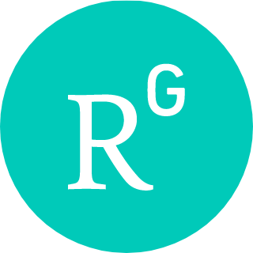
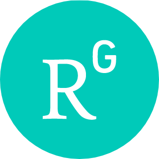

Nima Rasekh's Akademische Webseite
(english version)
Ich bin zurzeit Postdoktorand am Universität Greifswald in der Forschungsgruppe von Konrad Waldorf und Matthias Ludewig, und mathematischer Forscher für Turing. Ich bin derzeit auf dem akademischen Arbeitsmarkt auf der Suche nach Tenure-Track Positionen. Hier sind einige Links mit mehr Information:
 CV (Sep 2025)
CV (Sep 2025)
 GitHub
GitHub
 Arxiv
Arxiv
 Google Scholar
LinkedIn
Google Scholar
LinkedIn
 ORCID
 ResearchGate
X
Bluesky
ORCID
 ResearchGate
X
Bluesky
 Mastodon
Mastodon
 Youtube
Youtube
Es gibt auch mehrere Möglichkeiten mich zu kontaktieren:
 Email
Email
 Discord
Discord
Ich bin ein Homotopietheoretiker, was bedeutet, dass ich gerne verstehe, wie zwei Dinge gleich sind. Homotopisches Denken hat bereits viele Anwendungen in der Mathematik gefunden, wie Algebra, Geometrie und mathematische Physik, und ich freue mich immer darauf, neue Anwendungen und Verbindungen zu entdecken. Für einen besseren Einblick in das homotopische Denken, empfehle ich dieses ausgezeichnete Artikel von Emily Riehl, der den Aufstieg der höheren Kategorientheorie diskutiert, oder diesen anderen allgemeinen wissenschaftlichen Artikel über die Natur der Gleichheiten. Hier ist auch ein sehr verständliches deutsches Artikel über Kategorien.
Für weitere Informationen über mich, die über das Mathematische hinausgehen: Kürzlich hatte ich das Vergnügen, von meinem ehemaligen Masterstudenten Qi Zhu interviewt zu werden. Das Transkript dieses Gesprächs (auf Englisch) findet man hier.
In meiner Leidenschaft, das homotopische Denken einem breiteren Spektrum von Mathematikern und Informatikern zugänglicher zu machen, verfolge ich jetzt auch die Formalisierung der Mathematik und insbesondere homotopischer Strukturen. Mehr Details über meine Formalisierungen sind auf Github Seite finden. Hier sind auch Folien meines Vortrags im Weihnachtskolloquium über Formalisierung in der Mathematik.
Ich habe auch eine Vorlesung zur Homotopietheorie und höheren Kategorientheorie gehalten, dessen Inhalt ich in der Zukunft erweitern möchte. In der Zwischenzeit gibt es hier den Skript der Vorlesung.
Vor meiner jetzigen Position in Greifswald war ich eine Zeit lang Postdoktorand am Max-Planck-Institut für Mathematik und collaborateur scientifique (Postdoktorand) an der École Polytechnique Fédérale de Lausanne wo ich in der Forschungsgruppe von Kathryn Hess gearbeitet habe. Ich war Doktorand an der University of Illinois at Urbana-Champaign unter der Leitung von Prof. Charles Rezk.
E-Mail: nima.rasekh [at] uni-greifswald.de
Büro: 5.16
Addresse:Walther-Rathenau-Straße 47, 17489 Greifswald
Telefon: +49 3834 420 4663
- September 2025: Ich organisiere eine Konferenz mit dem Titel ``Formalizing Higher Categories" am Institut Mittag-Leffler vom 8. bis 12. Juni 2026 zusammen mit Jonathan Weinberger, Paige Randall North, Peter LeFanu Lumsdaine und Thierry Coquand. Die Teilnehmerzahl ist begrenzt, aber jeder, der interessiert ist, kann sein Interesse über dieses Google-Formular bekunden.
- August 2025: Meine Serie von Artikeln über die Filterquotient Konstruktion und deren Anwendung in der Homotopietypentheorie sind endlich veröffentlicht! Im Rahmen dieser Arbeiten konstruiere ich neue ``nicht-standard`` Modelle der Homotopietypentheorie und ein neues Modell der simplizialen Homotopietypentheorie, das nicht nur ``interne ∞-Kategorien" im traditionellen Sinne ist.
Hier sind Links zu den drei Artikeln: Filter Quotient Model Structures, Non-Standard Models of Homotopy Type Theory, und Simplicial Homotopy Type Theory is not just Simplicial: What are ∞-Categories?.
- Juli 2025: Mein Artikel Shadows are Bicategorical Traces, gemeinsam mit Kathryn Hess, wurde in Advances in Mathematics publiziert.
- Juli 2025: Ich hatte die wunderbare Gelegenheit, als externer Gutachter für die Masterarbeit von Gaspard Tomas zu fungieren, die den Titel "Covering Spaces in Homotopy Type Theory: Classification and Cohesive Interpretation" trägt und von Virgile Constantin und Jérôme Scherer an der EPFL betreut wurde.
- Juli 2025: Ich nehme an der Konferenz Quantum Field Theory and Topological Phases via Homotopy Theory and Operator Algebras am MPIM teil, die sich mit der Verbindung von höherer Kategorientheorie, Feldtheorie und Festkörperphysik beschäftigt.
- Juni 2025: Mein Artikel Shadows are Bicategorical Traces, gemeinsam mit Kathryn Hess, wurde zur Veröffentlichung in Advances in Mathematics angenommen.
- Mai 2025: Mein Artikel Cosmological Unstraightening wurde zur Veröffentlichung in Homology, Homotopy and Applications angenommen.
- Sommer 2025: In diesem Semester habe ich einen Einführungskurs zur Formalisierung in Lean4 für Bachelor-Studierende gehalten. Alle Kursmaterialien sind auf der Kurswebseite zu finden.
Hier ist eine Zusammenfassung einiger meiner laufenden Forschungsprojekte und Formalisierungen:
- Limes in (∞,n)-Kategorien (mit Lyne Moser und Martina Rovelli) Papier 1 - Papier 2 - Papier 3 - Papier 4 - Vortragsfolien - Vortragsaufzeichnung (von Lyne Moser):
Entwicklung einer Theorie der Limes für schwache Modelle von (∞,n)-Kategorien unter Verwendung von zweikategorialen Methoden und Kegeln, die sowohl aktuelle zweikategoriale Entwicklungen als auch (∞,1)-kategoriale Darstellungen von Limes verallgemeinert. Eine Definition ist jetzt in der Arbeit (∞, n)-Limits I: Definition and first Consistency Results enthalten und man findet ein Vergleich zu strikten Definition von (∞, n)-Limes von Shulman in dem Papier (∞,n)-Limits II: Comparison across models. Im Rahmen dieser Arbeit haben wir auch zwei Papiere veröffentlicht, in denen das erforderliche (∞,n)-kategoriale Hintergrundwissen dargelegt ist: A homotopy coherent nerve for (∞,n)-categories und An (∞,n)-categorical straightening-unstraightening construction.
- Geometrische Strukturen auf verdichteten Anima (mit Qi Zhu) Vortragsnotizen:
Herstellung relevanter topos-theoretischer Eigenschaften von verdichteten Anima, die in der von Clausen und Scholze etablierten verdichteten Mathematik eine wichtige Rolle spielen.
Eine chronologische Liste meiner Arbeiten kann man auf meiner ArXiv Webseite oder meiner Google Scholar Webseite finden. Thematisch, hat meine Arbeit drei allgemeine Themen:
Formalisierung der Homotopietheorie:
- Simplicial Homotopy Type Theory is not just Simplicial: What are ∞-Categories? - Vortragsskript 1 - Vortragsskript 2 - Vortragsaufzeichnung:
Wir konstruieren nicht-standard Modelle für simpliziale Homotopietypentheorie. Wir benutzen es dann um zu beweisen dass es interne ∞-Kategorien gibt, die nicht einfach durch simpliziale Objekte gegeben sind.
- Non-Standard Models of Homotopy Type Theory - Vortragsfolie - Vortragsaufzeichnung:
Wir konstruieren nicht-standard Modelle von Homotopietypentheorie im Sinne von Shulman via Filterquotient Modellkategorien.
- Filter Quotient Model Structures:
Wir konstruieren Modellstrukturen auf Filterquotientkategorien und beweisen, dass es viele relevante modellkategorielle Eigenschaften bewahren.
- Insights From Univalent Foundations: A Case Study Using Double Categories - Formalisierung in Coq Unimath - Vortragsaufzeichnung - Vortragsfolien,
mit Benedikt Ahrens, Paige North und Niels van der Weide,
Publiziert in Computer Science Logic 2025, doi:
Wir setzen unsere Untersuchung der Univalenz-Eigenschaften verschiedener Begriffe von Doppelkategorien fort. Im Rahmen dieser Arbeit führen wir die "Univalenz-Maxime" für kategoriale Strukturen ein, die eine Korrespondenz zwischen kategorialen Begriffen und Äquivalenzen herstellt. Mit dieser Methode erhalten wir insbesondere strikte Doppelmengenkategorien (invariant unter Isomorphismen), Pseudo-Doppelmengenkategorien (invariant unter Isomorphismen), univalente Pseudo-Doppelkategorien (invariant unter vertikalen Äquivalenzen), Verity-Doppelbikategorien (invariant unter Isomorphismen) und univalente Verity-Doppelbikategorien (invariant unter geselligen Äquivalenzen).
- Univalent Double Categories - Formalisierung in Coq Unimath - Vortragsfolien 1 - Vortragsfolien 2 - Vortragsnotizen,
mit Benedikt Ahrens, Paige North und Niels van der Weide,
Publiziert in Certified Programs and Proofs 2024, doi:
Wir entwickeln eine mögliche Definition einer univalenten Doppelkategorie, motiviert durch Pseudodoppelkategorien. Insbesondere beschreiben wir mehrere äquivalente Definitionen, konstruieren mehrere nichttriviale Beispiele und konstruieren die univalente Bikategorie der univalenten Doppelkategorien.
- Constructing Coproducts in locally Cartesian closed ∞-Categories - Vortragsfolien - Vortragsaufzeichnung,
mit Jonas Frey,
Publiziert in Homology, Homotopy and Applications, doi:
Wir zeigen, dass lokal kartesisch geschlossene ∞-Kategorien mit Unterobjekt-Klassifizierer ein Anfangsobjekt und Koprodukte haben, die ein bekanntes Ergebnis der elementaren Topostheorie verallgemeinern.
- Univalence in Higher Category Theory:
Wir untersuchen Univalenz in lokal kartesisch geschlossenen ∞-Kategorien unter Verwendung interner ∞-Kategorien (als vollständige Segal-Objekte), indem wir eine Definition von Gepner und Kock im präsentierbaren Rahmen verallgemeinern.
- Filter Quotients and Non-Presentable (∞,1)-Toposes - Vortragsskript - Vortragsfolie 1 - Vortragsfolie 2,
Publiziert in Journal of Pure and Applied Algebra, doi:
Wir verallgemeinern die Filterquotientenkonstruktion von elementaren Toposen auf (∞,1)-Kategorien, um neue nichtpräsentierbare (∞,1)-Topoi zu konstruieren.
- Truncations and Blakers-Massey in an Elementary Higher Topos - Vortragsskript - Vortragsfolie 1 - Vortragsfolie 2 - Vortragsfolie 3 - Vortragsaufzeichnung:
Wir beweisen, dass jeder elementare höhere Topos einen universellen Trunkierungsfunktor hat, der die Join-Konstruktion verwendet. Außerdem zeigen wir, dass er das Blakers-Massey-Theorem erfüllt.
- Yoneda Lemma for Elementary Higher Toposes:
Wir beweisen, dass jedes Objekt in einem elementaren höheren Topos in sein ``Objekt der Morphismen'' einbettet. Dies entspricht dem Yoneda Lemma für Räume.
- Every Elementary Higher Topos has a Natural Number Object - Vortragsskript - Vortragsfolien,
Publiziert in Theory and Applications of Categories:
Wir berechnen den Schleifenraum des Kreises und verwenden diesen, um zu zeigen, dass jeder elementare höhere Topos ein Objekt der natürlichen Zahl und interne abzählbare Limes und Kolimes hat.
- A Theory of Elementary Higher Toposes - Vortragsskript:
Wir definieren einen elementaren höheren Topos und zeigen, dass er elementare Topoi und höhere Topoi verallgemeinert.
- Complete Segal Objects - Vortragsskript - Vortragsaufzeichnung (vom Workshop im Fields Institute):
Wir definieren eine interne Version einer höheren Kategorie und zeigen, dass sie die gleichen Eigenschaften wie eine höhere Kategorie hat (wie Objekte, Morphismen, Komposition, ...). Dann verwenden wir sie, um Univalenz zu definieren.
Limes in (∞,n)-Kategorien:
- Cosmological Unstraightening,
Erscheint in Homology, Homotopy and Applications:
Wie konstruieren einen Lift von Lurie's Unstraightening Konstruktion zu einem kosmologischen Funktor von ∞-Kosmoi, definiert durch Riehl und Verity.
- (∞,n)-Limits II: Comparison across models,
mit Lyne Moser und Martina Rovelli:
Wir beweisen dass unsere Definition von Limes in schwachen Modellen von (∞,n)-Kategorien mit strikten Definitionen von Limes von Shulman übereinstimmt.
- (∞,n)-Limits I: Definition and first Consistency Results,
mit Lyne Moser und Martina Rovelli:
Wir stellen eine Definition von Limes in einer (∞, n)-Kategorie vor, die gleichzeitig 2-kategorische und (∞, 1)-kategorische Limes verallgemeinert.
- An (∞,n)-categorical straightening-unstraightening construction,
mit Lyne Moser und Martina Rovelli:
Wir verallgemeinern die Straightening-Konstruktion, die ursprünglich auf Lurie zurückgeht, auf (∞,n)-Kategorien, indem wir eine Quillen-Äquivalenz zwischen strikt angereicherten Funktoren aus der Kategorisierung und doppelten (∞,n-1)-Fibrationen über einer gegebenen n-Segal Vorkategorie konstruieren.
- A homotopy coherent nerve for (∞,n)-categories,
mit Lyne Moser und Martina Rovelli,
Publiziert in Journal of Pure and Applied Algebra, doi:
Wir konstruieren einen homotopisch kohärenten Nerv von angereicherten Kategorien zu Segal-Kategorien und beweisen, dass er uns eine Quillen-Äquivalenz liefert.
- Twisted Arrow Construction for Segal Spaces,
mit Chirantan Mukherjee:
Wir geben eine explizite Beschreibung der verdrehten Pfeilkonstruktion im Rahmen vollständiger Segal-Räume, wobei wir nur grundlegende Merkmale der Modellstruktur vollständiger Segal-Räume verwenden.
- Yoneda Lemma for D-Simplicial Spaces-Vortragsaufzeichnung-Vortragsfolien:
Wir definieren kartesische Faserungen für mehrere Modelle von (∞, n)-Kategorien, wie z.B. n-fache vollständige Segalräume. Wir untersuchen verschiedene Eigenschaften dieser Faserungen und beweisen insbesondere eine Grothendieck-Konstruktion.
- Quasi-Categories vs. Segal Spaces: Cartesian Edition,
Publiziert in Journal of Homotopy and Related Structures, doi:
Wir verallgemeinern die Äquivalenz zwischen Quasi-Kategorien und vollständigen Segalräumen von Joyal und Tierney zu einer Äquivalenz zwischen den kartesischen Faserungen.
- Cartesian Fibrations of Complete Segal Spaces,
Publiziert in Higher Structures, doi:
Wir definieren einen Begriff der kartesischen Faserungen für vollständige Segal-Räume, indem wir den Ansatz der vollständigen Segal-Objekte für rechte Faserungen verwenden.
- A Model for the Higher Category of Higher Categories,
Publiziert in Theory and Applications of Categories:
Wir konstruieren vollständige Segal-Räume, die simpliziale Räume, Segal-Räume, vollständige Segal-Räume und Räume mit ihren universellen Fibrationen modellieren.
- An Introduction to Complete Segal Spaces:
Dies ist eine sehr intuitive Einführung in die höhere Kategorientheorie über vollständige Segalräume. Es werden Themen wie Komposition, Funktorialität, Adjunktionen und Kolimes behandelt.
- Cartesian Fibrations and Representability -Vortragsskript 1 - Vortragsskript 2 - Vortragsskript 3,
Publiziert in Homology, Homotopy and Applications, doi:
Wir stellen eine neue Methode zur Untersuchung der Darstellbarkeit von kartesischen Faserungen vor und verallgemeinern dabei bestehende Darstellbarkeitsergebnisse für rechte Faserungen. Dies erlaubt uns insbesondere, darstellbare kartesische Faserung zu definieren.
- Yoneda Lemma for Simplicial Spaces:
Publiziert in Applied Categorical Structures, doi:
Wir untersuchen die Theorie der linken Faserungen über simplizialen Räumen, indem wir zeigen, dass linke Faserungen fibrantierte Objekte in einer Modellstruktur sind. Wir verwenden dies, um das Yoneda-Lemma für simpliziale Räume zu beweisen.
Homotopiekohärente Hochschild Homologie:
- Shadows are Bicategorical Traces-Vortragsaufzeichnung-weitere Vortragsaufzeichnung-Vortragsfolien-weitere Vortragsfolien
mit Kathryn Hess,
Publiziert in Advances in Mathematics, doi:
Wir charakterisieren Schatten, die ursprünglich auf Ponto zurückgehen, als angereicherte THH und verwenden dies, um einen alternativen Beweis für die Morita Invarianz zu liefern.
- The cotangent complex and Thom spectra,
mit Bruno Stonek,
Publiziert in Abhandlungen aus dem Mathematischen Seminar der Universität Hamburg, doi:
Wir verwenden die Ergebnisse der vorherigen Arbeit, um den Kotangens-Komplex von Thom-Spektren zu berechnen und verallgemeinern damit ein Ergebnis von Basterra und Mandell. Im Rahmen der Arbeit vergleichen wir auch verschiedene Definitionen von Kotangens-Komplexen, die in der Literatur zu finden sind, mit Methoden aus der Goodwillie-Calculus.
- Thom spectra, higher THH and tensors in ∞-categories-Vortragsskript-Vortragsfolie,
mit Bruno Stonek und Gabriel Valenzuela,
Publiziert in Algebraic & Geometric Topology, doi:
Wir berechnen Tensor und insbesondere THH von Thom-Spektren unter Verwendung von Tensoren präsentierbarer ∞-Kategorien, aufbauend auf Arbeiten von Gepner, Groth und Nikolaus. Das insbesondere verallgemeinert und vereinfacht ein Ergebniss von Schlichtkrull.
Andere Arbeiten:
- Analyzing RGB Images using Topology mit Ruth Davidson, Chuan Du, Rosemary Guzman, Adarsh Manawa und Christopher Szul:
In diesem Vortrag erörtern wir, wie ein an der Australian National University entwickelter Code zur Bildanalyse mit der diskreten Morse-Theorie eingesetzt werden kann. Wir zeigen, wie der Code in zwei verschiedenen Szenarien verwendet werden kann: Wasserknappheit und Kriminalitätsdaten.
- RGB image-based data analysis via discrete Morse theory and persistent homology mit Ruth Davidson, Chuan Du, Rosemary Guzman, Adarsh Manawa und Christopher Szul:
Wir verwenden einen an der ANU entwickelten Code, der grundlegende topologische Merkmale eines Graustufenbildes erkennen kann und ihn so verbessert, dass er auch RGB-Bilder analysieren kann. Dadurch können wir Datenanalysen direkt auf RGB-Bildern durchführen, die die Variabilität der Wasserknappheit und der Kriminalität darstellen.
- An Introduction to TFTs:
Dies ist ein Vortrag, den ich im Homotopieseminar für promovierende Studierende gehalten habe. Ich führe in die Grundbegriffe der topologischen Feldtheorien ein und zeige, dass selbst einfache Berechnungen die Verwendung höherer kategorialer Methoden erfordern.
- A New Approach to Straightening:
Dies sind meine Folien für den Vortrag, den ich auf der GSTGC (Graduate Student Geometry Topology Conference) 2016 gehalten habe. Ich zeige eine Methode, um die Unstraightening Konstruktion einem größeren mathematischen Publikum vorzustellen.
- Ich habe meine Promotion Vorprüfung am 3. März 2015 abgelegt. Hier sind mein Vorprüfungsplan und die Folien meines Vorprüfungsvortrags.